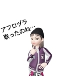
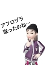

クリアハンモック、練習中！ [梅吉]
クリアハンモックにいまいち興味を持ってくれないのでブランケットを敷いてみました。

そうしたらあっさりIN！

むぎゅっとなって可愛いのは肉球だけではありません。
お顔もむぎゅ〜っ♡

![[猫]](https://blog.ss-blog.jp/_images_e/101.gif) わる ないで
わる ないで

ボウルが冷やっこい、
透明で下が見える事に抵抗がある云々・・・
梅吉がクリアハンモックに入らなかった理由はわかりませんが
こうやって徐々に慣らしていって
ここは安全で快適な「わしの巣」と思ってもらえると良いかなって。
ブランケットは小さく折りたたんで下が見える面積を大きくしたり
日々工夫をしております。
3日ほど経ちますが自分からハンモックに寝に行く様になってます。
全身むぎゅ〜の見られる日もそう遠くなさそう0(≧▽≦)0
私事ですが、今シーズン二回目の風邪っぴき中です。
今回は熱と咳。
一昨日は「なんかしんどい」と思ったら熱が38℃もありました(-_-メ)
若い頃は熱には強くて38℃くらいでもケラケラ笑いながら
（変にテンション高くw）遊んでたんですが
お年頃なんでしょうね〜。本気にしんどかったですw
今は熱も下がって咳が出るのみの回復期ですよ(๑˃̵ᴗ˂̵)و
今週末はそんな事情で皆様へのご訪問失礼しておりました。
月曜からまた遊びに伺いますねー。
2019年3月25日、
ChatBleuさんのブログ青い猫の日記が目出度く100,000nice!を達成！！
その映えある100,000番目のnice!をなんとー！私が踏ませていだたきました。
くじとか懸賞にはめっぽう弱いのですが今年は他にも良いことありそうな予感(≧▽≦)
記念のカードをいただきましたよ。ありがとうございます！
 ↑ガブッと一押し↑
↑ガブッと一押し↑
みんな私の話を聞いてもらえるかしら。
ああ、その前に002kくんには相棒君からメッセージがあるはずよ。
「002k、
zombieグループのケースは
解決した。
詳しい話は
会長から聞いてくれ。
100%信用できる。
僕は次のミッションの為
ヨーロッパに飛ぶ。
後日例の場所で落ち合おう！」

了解した！
話を聞こうじゃないか。
スパイのお二人が調べていたあの薬はね
飲んだ人がアフロになる薬だったの。
怪しい宗教団体設立の為とかアフロ人帝国の為とか思われていた様だけど・・・
ちぃはね、あの薬で世の中みんなアフロになれば
ママンとちぃ吉が戻ってきてくれるんじゃないかと思い込んだの。
人の心なんてそんなに単純なものじゃないのにね。
姉さんに言われて目が覚めたわ・・・
その通りなの。私どうかしていたのね。みんなにも迷惑をかけてしまって。
でも、姉さんどうして私の店を潰したスパイくんたちなんかと・・・
それがね〜。
仕事熱心にも私が出席した
世界アフロ会議 in ブラジルまで尾行して来たの（笑
話してみたらめっちゃ良いヤツでねー。
すっかり意気投合しちゃって（笑
腹を割って話して問題解決ってわけw
でも！
このスパイ養成所はどうなの？
まさか姉さんも認めたの？
ここもね、決して私利私欲の為ではないって分かったわ。
この国の未来を思ってちょっとやりすぎちゃったみたいだけど。
ここのオーナーとも話をしたわ。
うちのグループで買い取って
純粋なアスリート支援の団体にするつもりよ。
やったわ！これですべて解決ね！！
ちょっと待って！
その薬、まだ残ってるんだったら
僕飲みたいんだ！！
つづく・・・
友情出演：001k＝リュカさんの相方さんアバター

そうしたらあっさりIN！
むぎゅっとなって可愛いのは肉球だけではありません。
お顔もむぎゅ〜っ♡
ボウルが冷やっこい、
透明で下が見える事に抵抗がある云々・・・
梅吉がクリアハンモックに入らなかった理由はわかりませんが
こうやって徐々に慣らしていって
ここは安全で快適な「わしの巣」と思ってもらえると良いかなって。
ブランケットは小さく折りたたんで下が見える面積を大きくしたり
日々工夫をしております。
3日ほど経ちますが自分からハンモックに寝に行く様になってます。
全身むぎゅ〜の見られる日もそう遠くなさそう0(≧▽≦)0
私事ですが、今シーズン二回目の風邪っぴき中です。
今回は熱と咳。
一昨日は「なんかしんどい」と思ったら熱が38℃もありました(-_-メ)
若い頃は熱には強くて38℃くらいでもケラケラ笑いながら
（変にテンション高くw）遊んでたんですが
お年頃なんでしょうね〜。本気にしんどかったですw
今は熱も下がって咳が出るのみの回復期ですよ(๑˃̵ᴗ˂̵)و
今週末はそんな事情で皆様へのご訪問失礼しておりました。
月曜からまた遊びに伺いますねー。
2019年3月25日、
ChatBleuさんのブログ青い猫の日記が目出度く100,000nice!を達成！！
その映えある100,000番目のnice!をなんとー！私が踏ませていだたきました。
くじとか懸賞にはめっぽう弱いのですが今年は他にも良いことありそうな予感(≧▽≦)
記念のカードをいただきましたよ。ありがとうございます！
みんな私の話を聞いてもらえるかしら。
ああ、その前に002kくんには相棒君からメッセージがあるはずよ。
「002k、
zombieグループのケースは
解決した。
詳しい話は
会長から聞いてくれ。
100%信用できる。
僕は次のミッションの為
ヨーロッパに飛ぶ。
後日例の場所で落ち合おう！」

了解した！
話を聞こうじゃないか。
スパイのお二人が調べていたあの薬はね
飲んだ人がアフロになる薬だったの。
怪しい宗教団体設立の為とかアフロ人帝国の為とか思われていた様だけど・・・
ちぃはね、あの薬で世の中みんなアフロになれば
ママンとちぃ吉が戻ってきてくれるんじゃないかと思い込んだの。
人の心なんてそんなに単純なものじゃないのにね。
姉さんに言われて目が覚めたわ・・・
その通りなの。私どうかしていたのね。みんなにも迷惑をかけてしまって。
でも、姉さんどうして私の店を潰したスパイくんたちなんかと・・・
それがね〜。
仕事熱心にも私が出席した
世界アフロ会議 in ブラジルまで尾行して来たの（笑
話してみたらめっちゃ良いヤツでねー。
すっかり意気投合しちゃって（笑
腹を割って話して問題解決ってわけw
でも！
このスパイ養成所はどうなの？
まさか姉さんも認めたの？
ここもね、決して私利私欲の為ではないって分かったわ。
この国の未来を思ってちょっとやりすぎちゃったみたいだけど。
ここのオーナーとも話をしたわ。
うちのグループで買い取って
純粋なアスリート支援の団体にするつもりよ。
やったわ！これですべて解決ね！！
ちょっと待って！
その薬、まだ残ってるんだったら
僕飲みたいんだ！！
つづく・・・
友情出演：001k＝リュカさんの相方さんアバター

カフェオレ色の梅吉

梅吉 2023年8月10日 永眠


梅吉と出会った譲渡会

犬猫の理由なき殺処分ゼロ
妄想広告
UMEKICHI 光

爆発的に早い！
時々攻撃的！
Thanks to Mr.Boss365
爆発的に早い！
時々攻撃的！
Thanks to Mr.Boss365

ちぃさん無理しないでね。楽しみにはしてたんだけどちゃんと休んで下さい。
梅吉さんのタワー思ったより高いところにカップがあるんですね。すごーい。今はまだカップが"ひゃっこい"んでしょう。暖かくなるのが待ち遠しいです。
ZEPETO劇場zombiekongがリュカさんの相方くんと踊ってませんか? い、いつの間に⋯!?
by zombiekong (2019-04-01 00:54)
そうか、ボウルが冷たいからニャ～
風邪お大事に。
by 英ちゃん (2019-04-01 01:47)
クリアハンモック練習中！楽しみですねー。
その途中の段階も楽しいですね。
風邪！寒暖差、激しいですからねえ。お大事になさってくださいね。
咳は長引きますよー。
うわわ、ご紹介いただきありがとうございます。
元画像のサイズが小さいのでちょっとボケちゃいましたね。ごめんなさい。
ZEPETO妄想劇場、円満解決近し?!
by ChatBleu (2019-04-01 06:51)
何事も練習ですね。
完全透明ボールまで頑張りましょー！
風邪お大事に(^｡^)
by よーちゃん (2019-04-01 07:03)
ヒンヤリするのなら夏は下りてこなくなるかも？＾＾
by ぽちの輔 (2019-04-01 07:08)
風邪お大事になさってください。
by ニコニコファイト (2019-04-01 07:19)
クリアハンモック、梅吉さんもちぃさんも満喫ですねぇ♪( ´▽｀)
暖かくなったらブランケットが必要なくなるかな( ^ω^ )
可愛い肉球＆お顔の「むぎゅう」が見られそう=(^.^)=
風邪、ゆっくり休んでお大事にしてくださいね(_ _)
by ニッキー (2019-04-01 08:13)
確かに今の時期はクリアハンモックだと
冷たい感じがしますね(;^_^A
でも毛布を入れたら極楽？？？
慣れてくれたら、真夏の暑い日には
そのまま寝てくれそうですね(#^.^#)
最近は気温差が激しいですし
いきなり寒くなったりするので
体調を壊しやすいですよね・・・
お大事になさってくださいね！
by きぃ (2019-04-01 08:19)
こんにちは。
梅吉君！！クリアハンモックに良い収まり方してますね。
リラックスしている感じ、完全に「わしの巣」になっています。
100,000nice!を達成！！記念カード？羨ましいです。狙っていましたが・・・
２nice!前で前後賞も頂けない状況でした。
風邪お大事にして下さい。冷やっこい？ボウルで寝てはいけません。
ZEPETO！！今日は元号発表なのでスルーします（笑）！？(=^･ｪ･^=)
by Boss365 (2019-04-01 10:32)
また寒くなりましたからねー。
透明ボウルは冷たくてイヤなのかも＾＾
暑くなったらガンガンINしてもらいたいですね♪
お熱が出てしまいましたかΣ(T▽Ｔ;)
気温が安定しませんから体調を崩しやすいですよね。
無理なさらず、お大事になさってくださいね★
ZEPETO妄想劇場、無事完結？と思いきや？？(笑)
by カトリーヌ (2019-04-01 10:33)
風邪引きさんは温かくして寝るに限りますね（笑）
回復期でも咳はきついでしょう。
クリアハンモックの梅吉さんたら、可愛いブランケットがお供なのですね（笑）
すでに『わしの巣』宣言が出ているような（笑）
梅吉さんの、おみ足やおシッポのムギュッが見たいですね。
早く暖かい日が来ますように。
by kiki (2019-04-01 15:52)
風邪 無理しないで下さいね
熱には年々弱くなりますよねぇ
by (。・_・。)２ｋ (2019-04-01 17:10)
透明だから、私も下見たら怖いです。
でも梅吉くん、お顔むぎゅ～も見せてくれるなんて♪
なれてきている証拠だね(≧▽≦)よかった！よかった！
2度目の風邪っぴきｗ
私も熱が下がってちょっと調子にのったら！ぶり返して長引いちゃったのよ～。
無理しないで、平気でしょなんて言わずにゆっくり休んでね♪
ZEPETO。zombiekong姐さんとスパイくんたち、すっかり意気投合しちゃったのね。
でもちぃ吉は！アフロに目覚めちゃった？
自分の意志でなら怪しい薬をのむより～って思うけど
何かあるのかな？(*^-^*)
by emi (2019-04-01 17:30)
やはりニャンコは温かい物にくるまるのが好きなんですね。
風邪は慢性化しないように完治して下さいね。
by 旅爺さん (2019-04-01 17:43)
梅吉さん、クリアなハンモックは少し堅かったのかもですね！
風邪ですか？季節の変わり目は風邪引きやすいですね、お大事にしてください。
by ma2ma2 (2019-04-01 18:19)
お顔むぎゅーもいいっ♡
眠り落ちそうなお顔もキュートです♡
ゆっくり静養してくださいね。早くよくなりますように。
by liang (2019-04-01 18:32)
ブランケットを入れたら入ってくれたんだね^^
これならすぐにブランケットナシでも大丈夫になりそうだね♪
付属のおもちゃ、その位置に付けるのいいね！
うちはもうちょっと低い位置につけてあげようって思ったわ♪
風邪だいじょうぶ？
わたしは熱は出てないよー。土曜日風邪引いたけど日曜日には元気になっていた^^
でもまだ少し鼻づまり・・・
ちぃさん早くなおしてね^^
ZEPETO、zombiekong姉さんさすが金持ち！
アスリートを育てるのね^^
アフロのちぃ吉くんはどんなことになるやら？？？(笑)
by リュカ (2019-04-01 18:51)
お風邪お大事に。
私は花粉症で風邪に近い状態になってます＾＾；
クリアハンモック、危なっかしい気がするのか、ひゃっこいのかな～？
ピンクのブランケットとおさまってる梅吉さん、かわゆいー！
むぎゅうとなってるほっぺが可愛いなんて、本猫知る由もなし＾＾
あらまあ、アフロヘアに謎の薬にスパイ組織、そしてアスリート支援？！壮大なお話になってますねー！しかも丸く収まって、さすがです＾＾
by sana (2019-04-01 18:57)
先生は賢いのに、高い所がお好きなんですね〜
まぁ、サービス精神が 旺盛？！
気をつけてくださいよ。^ ^
by 小松達也 (2019-04-01 20:44)
クリアハンモックにきれいに納まってますね(*^▽^*)
お顔むぎゅがよいな～♪
ごめん寝したらどうなるんだろう？？妄想どんんどん膨らみます！
風邪、こじらせないようどうぞお大事に。
12月から飲み続けたお薬、3月末でようやく解放されました^^
by ゆきち (2019-04-01 21:38)
お顔むぎゅ〜! いいですね♪ ^^)
夏は涼を求めてクリアハンモックに入り放題！？
風邪、無理なさらずお大事に。
by yes_hama (2019-04-01 21:42)
回復に向かっているので安心しました。
でも無理しないで下さいね。
梅吉さん、居心地良さに見えます＾＾
by riverwalk (2019-04-01 22:35)
全体を見るとかなり大きなキャットタワーですね。
てっぺんで毛布に包まっている梅吉さん、早く治ると良いですね。
でも、気持ちよさそうですね～(^_^)
by kou (2019-04-02 15:31)
クリアハンモックはやはりちと冷たいのかな？
でもブランケットを入れたらこの調子なら、
お顔むぎゅ～の次は、肉球ムギュ~の日も近いと思われます。
楽しみです(^^
お熱と咳、つらかったですね。私もヒノキ花粉に粘膜をやられてます。
低気圧がじわじわ近づくと頭痛がして集中力に欠けます。
毎日のように雨が降るの。やめて～です(笑
by marimo (2019-04-02 21:24)
やはり、モフっとした触り心地の方が乗りやすいのかな？？
ブランケット仕様ならば気持ちよくお昼寝できそうですね。
ただ・・・ハンモックがお気に入りになると
寂しい思いをするのはこっちの方なんですよね^^;
毎日気候の変動も激しいですからね。風邪、おだいじにです。
by Ja-Kou66 (2019-04-02 23:34)
zombiekongさん＞
キャットタワー、
クリアハンモックはほとんど天井って感じです＾＾
アホなので高いところ、好きなんですよねー！
ハンモックはぬくぬくに慣れきった今の体には
ちょっと冷たい感じがするのかもしれません。
夏に期待大です！！
ZEPETO、
お姉さんの顔の広さ、人脈作りの上手さには脱帽ですよ(*>艸<)
英ちゃんさん＞
寒の戻りもあるしひやっとするのかもしれません！
冷やっこさが気持ちの良い季節には降りてこなくなっちゃうかもー。
ChatBleuさん＞
クリアハンモックは飼い主も梅吉も手探り状態って感じです。
過程で思いもしなかった面白いこと、起こるかもしれません＾＾
それも楽しみのうち♪
記念のカード、ありがとうございました！
私は数には極めて無頓着なので
自分の10,000nice!の記憶が全くありませぬw
この先もヤバイ・・・(⌒-⌒;
流石に100,000nice!は気付きそうですがいつになることやら、です。
よーちゃん＞
はい！工夫と練習＾＾
ニャンコ相手だとそれすらも楽しいのです♪
ぽちの輔さん＞
(｣ﾟﾛﾟ)｣それは困るー！でも十分起こりそうですw
そうなったら暑くてはみ出しているであろう
あんよをツンツンして我慢します(*>艸<)
ニコニコファイトさん＞
ありがとうございます！
完全では無いですが危機は脱しました＾＾
ニッキーさん＞
クリアハンモック、家族みんな堪能してます！
梅吉の様子を見ながらステップの角度を変えるのもすでに何度目かに。
その微調整すらも楽しいです♪
「むぎゅう」は毛の流れさえも絵になりますよー。
自分がこんなにむぎゅう好きだったなんて驚きです(*>艸<)
きぃさん＞
まだぬくぬくが恋しい気温ですものねー！
ハンモックにホットカーペットを仕込もうか？
という話も出ましたが
ハンモックの素材の劣化も考えられるし
なにより電源が届かないので却下しましたw
Boss365さん＞
ひとまず「わしの巣」認定はしてもらえた様です＾＾
おかーさんがニヤニヤしながら見ているのにも慣れた様で
冷めた目で見返される様になりました(⌒-⌒;
ChatBleuさんのnice!は
私の様に付き合いの浅いものが踏んでも良いものだろうか・・・
と一瞬戸惑いましたが押し逃げさんよりは良いだろう、と
ポチッとしました！
押した瞬間100,001なんて事になるか？と思いましたが
大丈夫でしたー＾＾
100,000に変わる瞬間は快感でしたよwww
カトリーヌさん＞
暑い時期の長い大阪なので
透明ボウルの活躍期間も長かろう、と期待しております＾＾
寒い時期は「ぎゅう」が見られないのか、という懸念は
自分の中でスルーしてます(*>艸<)
ZEPETO劇場いよいよ大円団です！
もしかしたら、その先が・・・？
kikiさん＞
ブランケット、今年のシーズン初めに手に入れました。
毎年一枚ずつ増えていっている様に思います。。。
梅吉が私の使っているのを使いたがるのでこの様な事にーwww
クリアハンモックは「わしの巣」認定を受けた様です＾＾
ステップもしゅたたたたたっと上手に上がる様になり
（下僕もステップの位置をずらしたりがんばって）
お気に入りとなっている様です。
飼い主も、皆さんも夏のクリアハンモックに大注目！！
さて、どうなるのでしょうか・・・・
2kさん＞
年々体力もなくなりますが
風邪に対しての反応も変わってくるのですねぇ・・・
emiさん＞
梅吉の場合、下が透明な事には全く抵抗無いみたいです＾＾
単にこの季節には寝心地が今ひとつだった様ですよ。
肉球＆その他の「むぎゅっ」を早く見たいと
梅吉のぬくぬく好きをすっかり忘れておりましたwww
ちぃ吉くんのアフロには隠された秘密が・・・？
その辺ちょっと強引に話を進めちゃいましたが
読んでいる皆さんの想像力でカバーしていただこうと思ってます(*>艸<)
皆さま頼り〜。
旅爺さん＞
早く「むぎゅっ」となったのが見たいと
梅吉のぬくぬく好きをすっかり忘れておりましたwww
ブランケットで「ここは暖かい場所」と
覚えてもらおうと思っています＾＾
ma2ma2さん＞
クリアハンモック、硬い＆冷やっこいだったのかもしれませんw
ブランケットの感触をイメージとして覚えてもらいます＾＾
liangさん＞
そうなんです！どこを「むぎゅっ」としても可愛くって♡
（すみません、親バカで・・・(⌒-⌒;）
今まで見えなかった色々な表情、楽しんでまーす♪
by ちぃ (2019-04-03 16:26)
リュカさん＞
やっぱりまだぬくぬくが恋しい気温ですからねーw
ハンモックのぬくぬくに気づいて
天井近くは空気もあったかいって気づいたみたいです。
やったー！！
デフォルトのおもちゃ、もうすでに見向きもされなくなっているので
無くても良い感じです(⌒-⌒; )
飽きっぽいなっ、もー。
風邪は今日ですっかり良い感じ＾＾
昨日お花見行ったのですが寒そうだったので防備してったのが
良かったみたいです。
関西は今週末が桜の見頃かなぁ・・・
sanaさん＞
花粉症でいらっしゃいましたかm(_ _)m
スギに続いてヒノキの花粉が舞っている様ですね。
あとひと月くらい？sanaさんもお大事に！！
ハンモックも使用率が高くなってきましたが
まだお気に入り寝床ベストスリーにランクインはしてませんw
無理強いして嫌がられるのも困るので
徐々に徐々にいろんな手を使ってお気に入りにしてみせます！！
ZEPETOはオリンピックまで話を持って行きました(*>艸<)
小松達也さん＞
賢者は高きを目指す、ですっ(๑•̀ㅂ•́)و✧
暴れん坊ですが意外と行動は慎重なので
多分、大丈夫でしょう＾＾
もちろん危なそうだったらちゃんと対策とりまーす！
ゆきちさん＞
お顔むぎゅ、歯もむき出してたのですがとらえ切れずw
残念ですー！
先日は背中がむぎゅってなっているのが丸見えだったのですが
肉球とか無くて毛がうねうねしているだけなのに
それが可愛くって・・・・・
あんな格好やあそこやここがぎゅうってなったら！
と想像すると期待が膨らみまくります(*>艸<)
お薬と縁が切れましたか！！
yes_hamaさん＞
夏にご期待ください！
いろんな所がむぎゅっとなって
ブログのネタが来る日も来る日もその写真かもしれません0(≧▽≦)0
riverwalkさん＞
もう無理は禁物なお年頃ですものね♪
ブランケットで居心地アップはもちろんですが
天井近くにあるクリアハンモックは
暖かい空気が流れて快適な場所だと思われます＾＾
kouさん＞
そうなんです！天井近くまでステップがついてます。
活発な梅吉にはぴったりだし
快適なベッドにもなる、予定です！！
by ちぃ (2019-04-04 15:07)
marimoさん＞
クリアハンモック、梅吉が入っている時に触ると
とってもあったかいので周りの温度に左右されやすいのかな。
上段は空気があったまっているとはいえ
まだちょっぴり肌寒い感じがするので
ハンモックの冷たさに馴染めなかったのかもしれませんw
これからの長い夏にご期待ください！！
私の風邪はほんの１週間くらいでしたが
花粉症な方は症状が長く続きますね・・・
おまけに迫り来る低気圧www
GW頃の気候が待ち遠しいですね＾＾
Ja-Kou66さん＞
今の所ハンモックに入り浸りでは無いので大丈夫ですが
夏場は降りてこない可能性が大、ですねwww
以前はキャットフードを入れていある納戸の扉を開けると
一目散で走ってきたのですが
最近「あれは騙しw」と気づいてきた様でその手も使えないし・・・
（私が）脚立のてっぺんに乗って触れ合う、夏になりそうな予感♪
by ちぃ (2019-04-04 16:53)